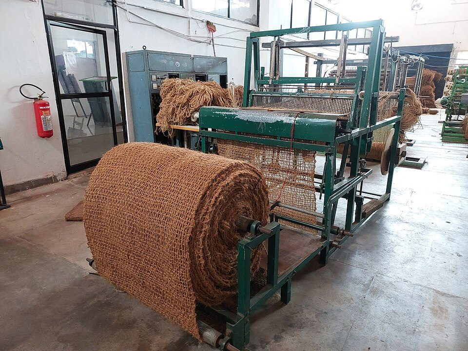
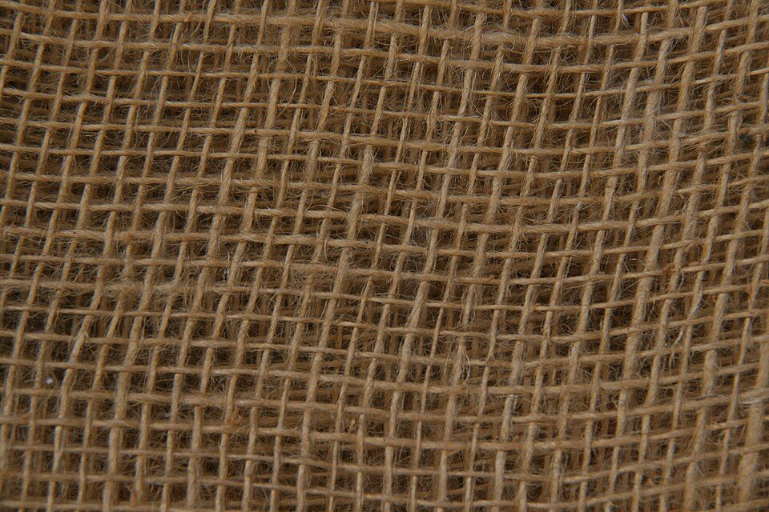
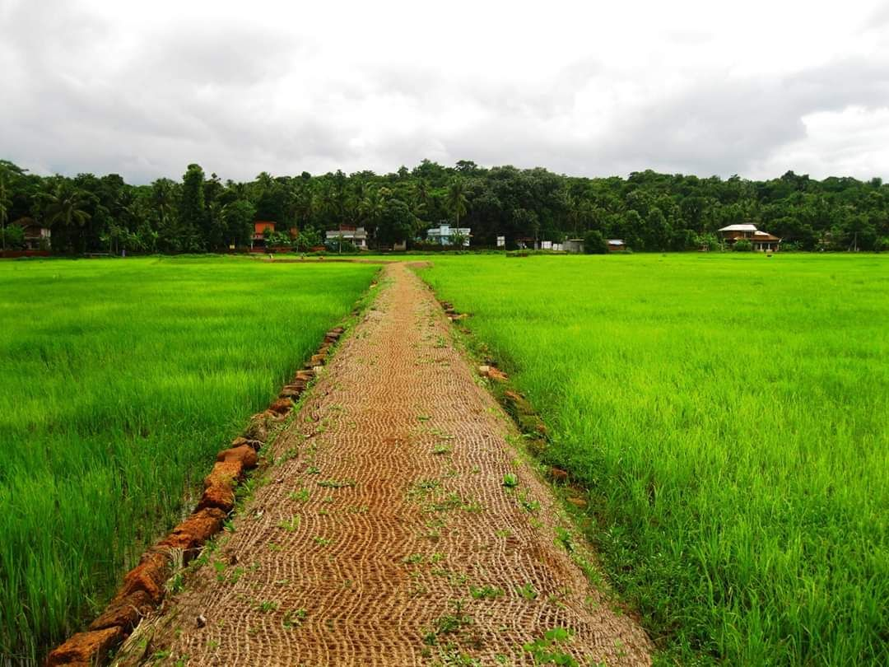
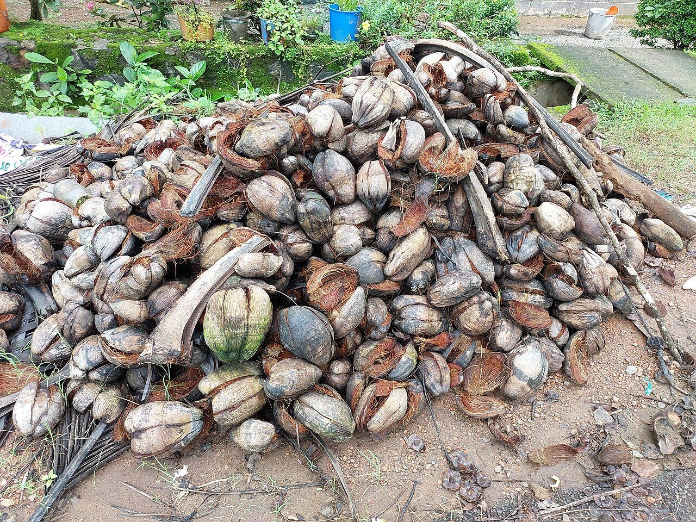

Natural fibre solutions for real-world requirements.
A technical and commercial starting point for importers, distributors, landscapers and project teams sourcing coir and jute products.
Coir geo-mesh rolls and mats produced to target GSM, roll width and aperture size for project supply.


Bulk fibre, golden jute sacking and palletised units prepared per SKU for wholesale and export.
A clear route from brief to supply.
Start with the end use. Confirm the specification. Then align sample requirements, volumes and delivery terms.
Application & product fit
Tell us whether the requirement is for erosion control, landscaping, homeware, horticulture or packaging.
Technical & product details
Confirm dimensions, weave, fibre composition, GSM and test methods where applicable to the exact SKU.
Samples & logistics
Discuss sample requests, custom dimensions, pallet details, order volumes and shipping terms.
Support the landscape with coir.
Explore woven coir mesh, erosion-control logs and open-weave weed-prevention mats. Product selection should reflect slope, soil, exposure, installation method and project requirements.
View geo-textile details →

Evidence before environmental claims.
Material origin and end-of-life outcomes depend on product construction and disposal conditions. We keep sustainability information specific, transparent and tied to available evidence.